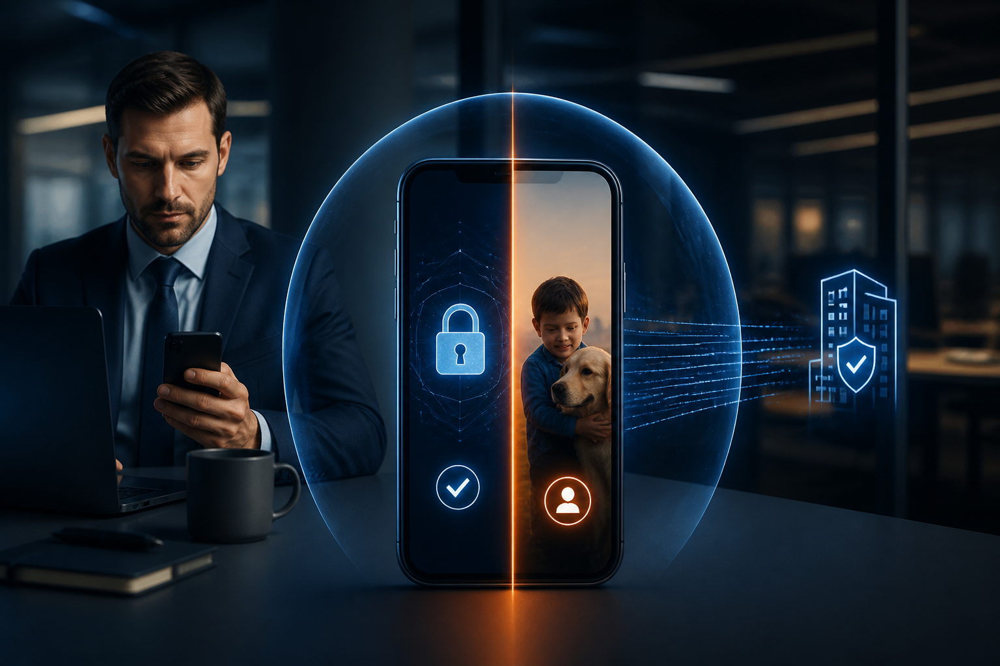
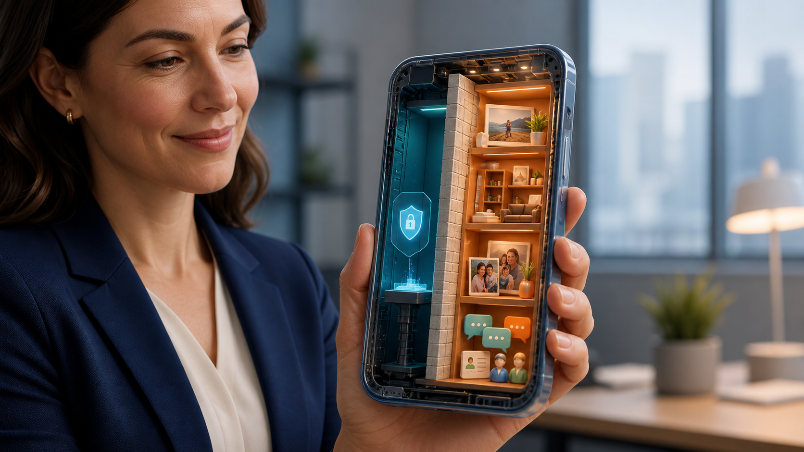
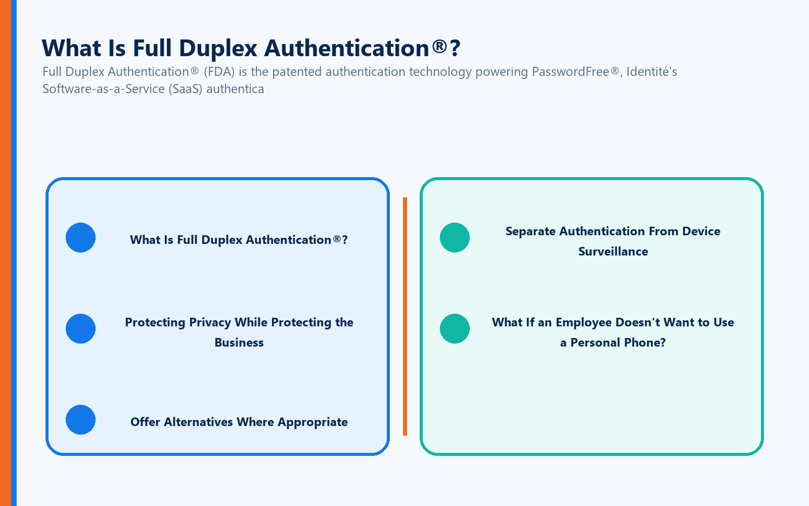
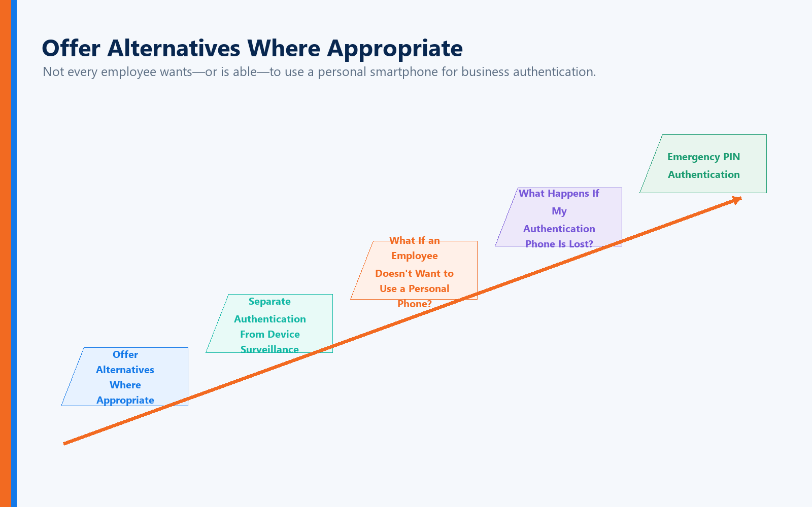
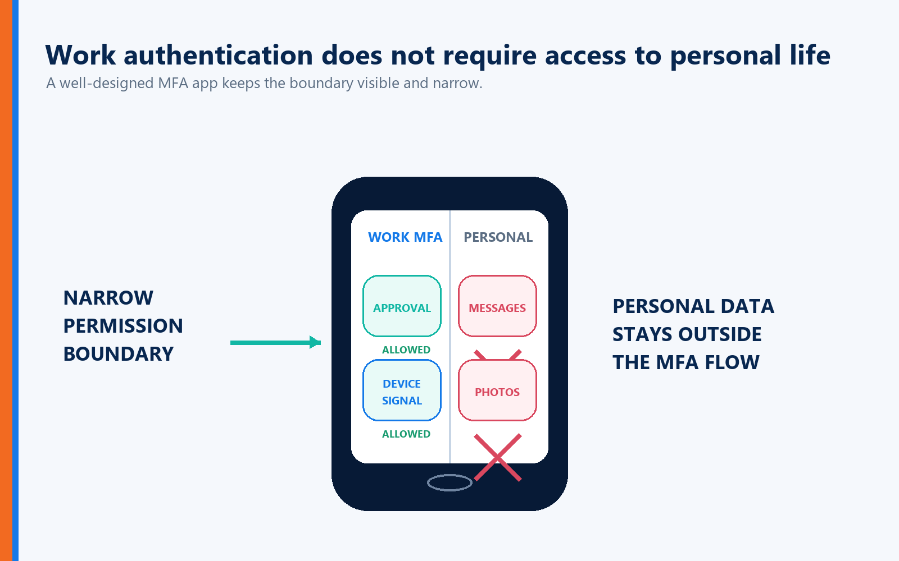
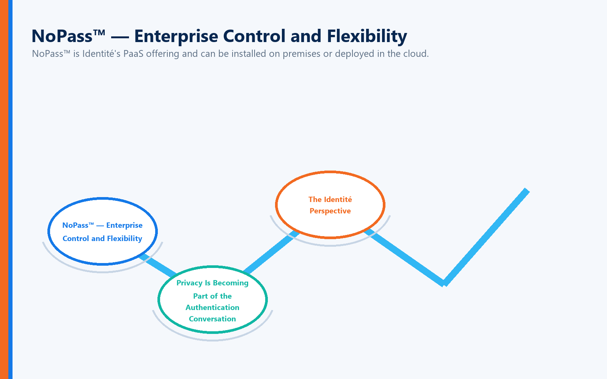

You've just been told that Multi-Factor Authentication (MFA) is required to access your company's email, applications, or network.
There's just one problem:
Your employer wants you to use your personal smartphone.
For many employees, that immediately raises an uncomfortable question:
"If I use my personal phone for work authentication, can my employer see what's on my phone?"
It's a legitimate privacy concern.
In most conventional MFA deployments, simply using an authenticator application does not automatically give an employer access to everything on a personal phone. But the complete answer depends on what software is installed, what permissions have been granted, and whether the device is also enrolled in a company's mobile device management (MDM) or endpoint-management system.
There's also a larger question organizations should be asking:
Why should strong authentication require employees to surrender unnecessary privacy in the first place?
Modern authentication should protect the company while respecting the employee.
MFA Doesn't Automatically Mean Access to Your Phone
One of the most common misconceptions about MFA is that installing an authentication application gives an employer unrestricted access to the employee's smartphone.
An authenticator and a device-management platform are not necessarily the same thing.
A typical MFA application may be used to:
Generate authentication codes
Receive authentication requests
Confirm login attempts
Establish possession of a registered device
That does not inherently mean the employer can browse the employee's:
Personal photographs
Text messages
Personal email
Social media conversations
Web browsing history
Personal contacts
Other private applications
However, employees should understand exactly what they are being asked to install.
MFA and Mobile Device Management Are Different
This distinction is extremely important.
MFA verifies identity.
Mobile Device Management manages devices.
An MDM or enterprise mobility platform may provide an employer with considerably more administrative control than a standalone authentication application, depending on how the device is enrolled and configured.
For example, an organization's device-management policies might allow administrators to enforce security requirements, manage corporate applications, remove company data, or collect certain information about the device.
That doesn't mean every employer using MFA is doing these things.
It means employees should not assume that every workplace application has identical permissions.
Before installing software on a personal device, employees should understand:
What application is being installed?
What permissions does it request?
What information does it collect?
What can the employer see?
Can the employer remotely remove corporate information?
Is the phone being enrolled in device management?
What happens when the employee leaves the company?
Transparency should be part of every corporate authentication program.
Why Employees Are Concerned About Personal Phone Privacy

A smartphone isn't simply a telephone anymore.
For many people, it contains an extraordinary amount of personal information:
Family photographs
Private conversations
Banking applications
Health information
Personal email
Location information
Social media accounts
Personal documents
Understandably, employees may hesitate before installing corporate software on the same device.
Even when an authentication application has limited permissions, uncertainty about what the employer can see can create distrust.
That's a problem for employers too.
Security programs work best when employees understand and trust the technology they're being asked to use.
Should Employees Have to Use Personal Phones for MFA?
That's a different question from whether an employer can see the contents of the phone.
Employers frequently have legitimate reasons for requiring strong authentication before allowing access to corporate resources. But whether they can require employees to supply their own personal device can depend on employment law, jurisdiction, reimbursement requirements, employment agreements, collective bargaining agreements, accessibility considerations, and company policies.
Organizations should obtain appropriate legal guidance for their particular circumstances.
But there's also an important technology question:
Does secure authentication actually need to depend on a personal smartphone?
Increasingly, the answer is no.
Authentication Should Verify Identity—not Invade Privacy
A well-designed authentication system should collect only the information necessary to establish trust.
The objective should be straightforward:
Verify that the person requesting access is authorized to access the resource.
Authentication shouldn't become an excuse to unnecessarily expose an employee's personal digital life.
This principle becomes particularly important as organizations adopt Bring Your Own Device (BYOD), hybrid-work, and remote-work policies.
Security and privacy don't have to be opposing goals.
What Is Full Duplex Authentication®?

Full Duplex Authentication® (FDA) is the patented authentication technology powering PasswordFree®, Identité's Software-as-a-Service (SaaS) authentication solution, and NoPass™, its PaaS solution that can be deployed on premises or in the cloud.
Instead of relying on traditional passwords and one-way authentication, Full Duplex Authentication® establishes trust by requiring both sides of the authentication relationship to authenticate. The user must authenticate to the legitimate application or website, and that application or website must authenticate itself as legitimate as well.
This mutual authentication approach helps defend against phishing, credential theft, and imposter or lookalike websites while providing a passwordless experience designed around security, privacy, productivity, and business continuity.
The distinction matters.
An attacker may be able to copy a website's appearance.
They cannot successfully perform the legitimate site's side of Full Duplex Authentication®.
Protecting Privacy While Protecting the Business
Employees and employers shouldn't have to choose between privacy and cybersecurity.
An effective authentication strategy should minimize the information and permissions necessary to verify identity while still providing strong protection for corporate resources.
For organizations considering authentication on employee-owned devices, several principles are especially important.
Be Transparent
Employees should know what the authentication solution does and what information it uses.
Minimize Permissions
Authentication software should request only the access necessary to perform its intended function.
Offer Alternatives Where Appropriate

Not every employee wants—or is able—to use a personal smartphone for business authentication.
Organizations should consider alternative authentication methods where their policies and security requirements permit.
Separate Authentication From Device Surveillance
The purpose of authentication is to verify identity and access—not to unnecessarily inspect an employee's personal information.
What If an Employee Doesn't Want to Use a Personal Phone?
Organizations should design authentication programs that recognize this possibility.
Depending on the environment and company policy, alternatives can include:
Company-issued devices
Hardware security keys
Trusted corporate endpoints
Other approved authentication methods
Identité also supports compatible third-party hardware tokens, including security keys such as YubiKey, giving organizations another option for users or environments where smartphone-based authentication may not be desirable.
This can be particularly important for:
Healthcare environments
Financial institutions
Government organizations
Manufacturing facilities
Secure facilities where phones are restricted
Employees with privacy concerns
Strong authentication should be flexible enough to accommodate the realities of the workplace.
What Happens If My Authentication Phone Is Lost?

Privacy isn't the only concern associated with putting authentication on a smartphone.
There's also business continuity.
Phones get:
Lost
Stolen
Damaged
Replaced
Left at home
Depleted of battery power
Traditional MFA can turn those everyday situations into significant productivity problems.
Authentication powered by Full Duplex Authentication® is designed with recovery in mind.
Emergency PIN Authentication
When permitted by organizational policy, an authorized user can use an Emergency PIN if the primary authentication phone is temporarily unavailable.
The Emergency PIN isn't intended to replace normal passwordless authentication.
It provides a controlled business-continuity mechanism so that a missing phone doesn't automatically become a lost workday.
Secure Backup & Restore
If a phone needs to be replaced, users shouldn't have to rebuild their authentication environment from scratch.
With PasswordFree® and NoPass™, authentication information can be securely backed up according to the organization's configuration to the cloud or corporate network.
When the employee obtains a replacement phone, the authentication profile can be restored to the new device.
The restore process can be completed in less than two minutes.
For employers, that can mean:
Less employee downtime
Fewer emergency help desk calls
Faster device replacement
Greater operational resilience
For employees, it means a lost phone doesn't have to become an authentication crisis.
PasswordFree® or NoPass™: Different Organizations Need Different Approaches
Identité provides two distinct options based on an organization's requirements.
PasswordFree® — SaaS Simplicity
PasswordFree® is Identité's SaaS offering for organizations seeking a cloud-delivered passwordless authentication solution.
It is designed to provide strong authentication while reducing password dependency, simplifying administration, and improving the user experience.
NoPass™ — Enterprise Control and Flexibility

NoPass™ is Identité's PaaS offering and can be installed on premises or deployed in the cloud.
Enterprise organizations that require integration with environments such as:
Microsoft Active Directory
Microsoft Entra ID
Microsoft 365 / Office 365
Microsoft Azure
can choose NoPass™ powered by Full Duplex Authentication®.
For organizations with strict data-control requirements—particularly banks and other highly regulated enterprises—an on-premises NoPass™ deployment provides an option for maintaining authentication infrastructure within the organization's own environment.
Privacy Is Becoming Part of the Authentication Conversation
For years, cybersecurity discussions focused primarily on one objective:
Keep attackers out.
That remains essential.
But modern identity systems must consider another objective:
Protect legitimate users without unnecessarily compromising their privacy or productivity.
That means organizations should consider not only whether an authentication solution is secure, but also:
What information does it collect?
What permissions does it require?
Does it require employees to use personal devices?
Are alternatives available?
What happens when a device is lost?
How quickly can an employee recover?
Can the system protect users from phishing and imposter websites?
Those questions belong in every modern authentication evaluation.
The Identité Perspective
The question shouldn't simply be:
"Can my employer see what's on my phone?"
A better question is:
"Why should strong authentication require unnecessary access to my personal information at all?"
Employers need strong cybersecurity.
Employees deserve reasonable privacy.
Those objectives can coexist.
That's part of the philosophy behind PasswordFree® and NoPass™, powered by patented Full Duplex Authentication®.
Modern authentication should verify identity without creating unnecessary privacy concerns. It should protect users against phishing and imposter websites. It should provide alternatives such as compatible third-party hardware tokens when appropriate. And when devices are lost or replaced, Emergency PIN Authentication and Secure Backup & Restore should help keep authorized users productive.
Cybersecurity shouldn't require organizations to choose between protecting their systems and respecting their people.
The best authentication should provide both.